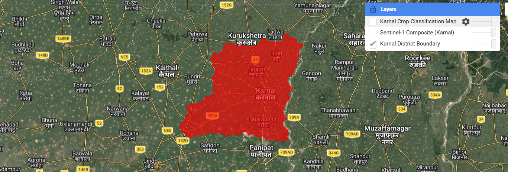
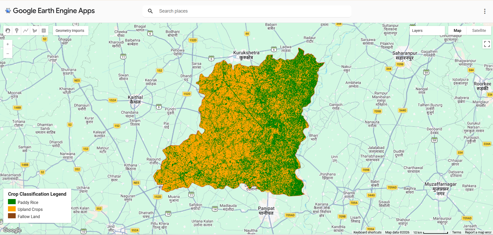

01. Introduction to SAR in Agriculture
Reliable agricultural monitoring is vital for food security and water management. While optical satellites struggle during thick monsoon cloud cover, Synthetic Aperture Radar (SAR) transmits active microwave signals that penetrate clouds, haze, and darkness.
By tracking radar backscatter across the Kharif season, we can observe distinct crop cycles—such as the dramatic change in backscatter when paddy fields are flooded for transplantation and subsequent vegetative growth.
02. Study Area: Karnal District, Haryana
Karnal district is an intensively cultivated region in the Indo-Gangetic plain, making it an ideal testbed for automated crop mapping.
- Boundary Source: Administrative boundaries via Google Earth Engine.
- Season Monitored: Kharif Season.
- Key Target Classes: Paddy Rice, Upland Crops, and Fallow Land.

03. Methodology & Data Workflow
Data Acquisition
Sentinel-1 GRD C-band (VV & VH polarizations, Descending orbit).
Feature Extraction
Computed VH/VV Ratio, temporal mean, and standard deviation.
Classification
Trained Random Forest Classifier using reference sample points.
04. GEE Interactive Map & Classification Results
The classified map below displays the spatial distribution across Karnal district with the bottom-left legend (Paddy Rice, Upland Crops, and Fallow Land). You can also click the button below to open the live Google Earth Engine map directly.

Legend: Green (Paddy Rice), Orange (Upland Crops), Brown (Fallow Land)
05. Accuracy Assessment
Overall Accuracy
87.6%
Evaluated using independent validation partition
Class-wise Performance:
- Class 0: Paddy Rice ~55.2%
- Class 1: Upland Crops ~20.9%
- Class 2: Fallow Land ~98.8%
06. Uncertainty & Limitations
While Random Forest achieved strong overall performance (~87.6%), mixed pixels in fragmented smallholder farms and localized soil moisture variations can introduce minor classification confusions between classes.
07. References & Resources
- Veloso, A., et al. (2017). Understanding the temporal behavior of crops using Sentinel-1 and Sentinel-2-like data. Remote Sensing of Environment, 199, 415-426.
- Mishra, et al. (2022). Crop classification using Sentinel-1 SAR data and machine learning: an Indian agricultural application in Karnal district. Environmental Monitoring and Assessment.
- Google Earth Engine Documentation & NASA ARSET Training.